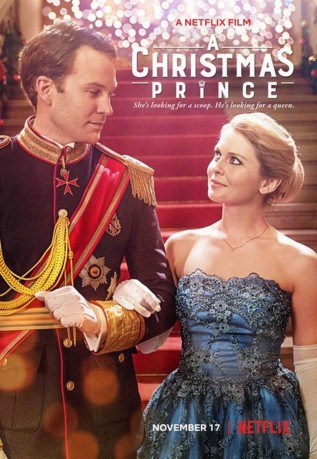

IMDB-Wertung: 5.7 / 10
IMDB-Wertung: 5.7 / 10  Metascore:
Metascore: 
When a reporter goes undercover as a nanny to get the inside scoop on a playboy prince, she gets tangled in some royal intrigue and ends up finding love - but will she be able to keep up her lie?
 IMDB-Wertung: 5.7 / 10 Metascore:
When a reporter goes undercover as a nanny to get the inside scoop on a playboy prince, she gets tangled in some royal intrigue and ends up finding love - but will she be able to keep up her lie?
Jahr: 2017
Dauer: 92 Minuten
FSK:
Land: USA Studio: NetflixTonspuren: DD5.1 - ,
Untertitel: Deutsch, Englisch,
Auflösung: 1080p (1920x1080) Größe: 3543 MB
Genre: Liebe, Weihnachten
Regisseur: Alex Zamm
Drehbuch: Karen Schaler
Soundtrack:
Darsteller:
Datei: X:\2017(A-F)\Christmas Prince, A (2017, FSK, 1920x1080).mkv seit 20.11.2017
Festplatte: HD 2017(A-Z)-2018(A-F)
 Es gibt insgesamt 152 Filme in der Gruppe '2017(A-F)'
Es gibt insgesamt 152 Filme in der Gruppe '2017(A-F)'